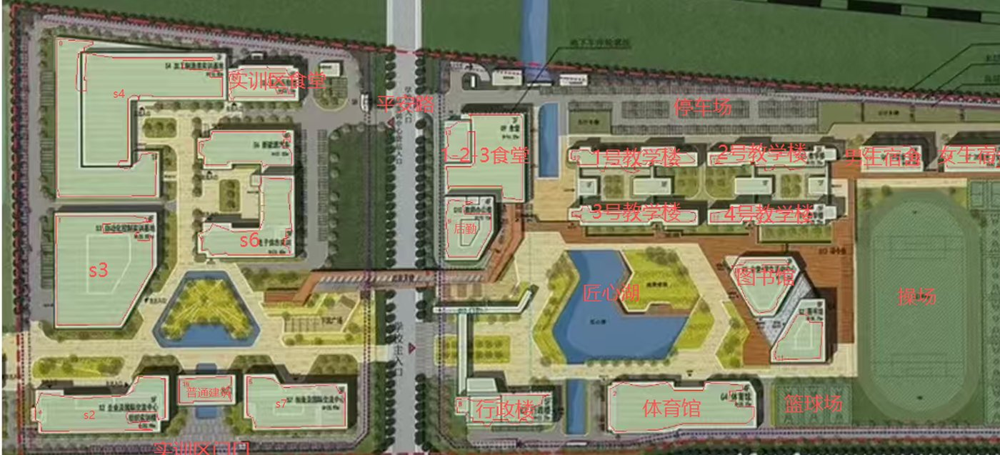

校园公告Notice
全部公告 →- 11-122026江苏省张家港中等专业学校采购张中专音乐教室改造项目邀请采购公告
- 11-092026关于开展市名师工作室第二年度考核工作的函
- 11-052026江苏省张家港中等专业学校中专校采购宿舍循环泵项目公开采购公告
- 11-052026采购2026-2027年计算机一级MSOFFICE题库项目公开采购公告
"五心"苏式工匠Five Hearts
展开看五条 →新闻和专业里写的是张家港本地的企业和岗位。
注意事项里写清几点有人、怎么少跑一趟。
内容都在后台维护，站不用每次重做。
办事指南写到楼栋、楼层和门牌号。
公告里的要求能变成一张可打印的单子。
校园导览Campus Guide
进入导览 →
主校区与平安路西侧实训区
主校区
- 1—4 号教学楼每层中间和最东边是办公室
- 1-2-3 食堂一栋楼三层，一层可补办饭卡
- 图书馆一楼为校医室
- 行政楼各处室办公地
实训区（平安路西侧）
- s1—s7 实训楼自动化、智能制造、电子、焊接
- 实训区食堂中午第一批就餐
学校介绍
江苏省张家港中等专业学校（江苏联合职业技术学院张家港分院）位于张家港市福新路 2 号。
学校前身为江苏省张家港职业教育中心校，1980 年办班、1984 年建校，1988 年创建国标省重点，1996 年成为首批国家级重点职业高中，2009 年成为首批省四星级、省高水平示范性职业学校，2014 年成为首批国家中等职业教育改革发展示范校，2015 年升格为江苏联合职业技术学院张家港分院，2018 年创建为江苏省现代化示范性职业学校，2020 年成为江苏省领航学校建设单位，2024 年 7 月整体迁入福新路 2 号新校区。
学校占地 360 亩，建筑面积 21 万平方米；现有"3+3"分段培养、五年一贯制、职教高考、三年制中专 4 个办学层次，开设 28 个中高职专业，其中省级品牌专业 4 个、省级示范专业 5 个、省级现代化专业群 3 个；在校班级 147 个，学生 6200 余人，专任教师 419 名；建有学生实践基地 10 个，数控技术应用为国家级实训基地。
发展记事History
- 1980办班
- 1984建校
- 1988创建国标省重点
- 1996首批国家级重点职业高中
- 2009首批省四星级、省高水平示范性职业学校
- 2014首批国家中等职业教育改革发展示范校
- 2015升格为江苏联合职业技术学院张家港分院
- 2020江苏省领航学校建设单位
- 2024整体迁入福新路 2 号新校区
组织机构Organization
党政管理机构
- 党政办公室戴勇林（主任）
- 组织人事处胡梅（主任）
- 教学管理处方琴（主任）
- 学生管理处万杨（主任）
- 实训管理处顾达（主任）
- 图文信息处徐振宇（主任）
- 合作就业处徐宇琴（主任）
- 后勤服务处刘宇峰（副主任主持工作）
- 校团委袁一楠（书记）
教学单位
- 智能控制系李锋（主任）
- 机械与汽车工程系常鹤晖（主任）
- 信息工程系张少维（主任）
- 经济贸易系朱庆和（主任）
- 能源材料系秦峰（副主任主持工作）
- 职教高考部倪鸣春（主任）
新闻中心
校园新闻与部门动态，数据来自学校官网，标题与日期原样保留。
校园新闻Campus News
部门新闻Department
校园公告
共 12 条，标题与日期原样。
"五心"苏式工匠
下面五段，每段对应站里一个点得开的位置。
红心看的是新闻和专业里写了什么，仁心看的是注意事项怎么写，恒心看的是这个站能不能一直维护下去，匠心看的是房间号写到几位，创心看的是那条办理单怎么生成。
新闻和专业里写的是本地的产业
企业宣讲、专场招聘的稿子用的是具体厂名，不是泛泛的“合作企业”。
注意事项里写的是怎么少跑一趟
校医室先看病、后补手续；静校 12:15—12:55 这个点不接事，写出来能省一趟路。
这个站能一直维护下去，不用每次重做
模板里改列名，生成的文件跟着变；数据能导出成 JSON 备份，换台电脑再导回来。
房间号写到门牌
材料清单写“一寸免冠照片 1 张、身份证复印件 1 份”，不写“带好相关材料”。
公告里的要求能变成一张单子
47 条内容里 9 条能生成文件，其余写着“本条不涉及学生办理事项”。
校园导览
主校区与平安路西侧实训区。楼栋名称以现场标识为准。
校园总平面图 · 主校区 + 实训区
主校区
- 1—4 号教学楼每层中间和最东边是办公室
- 1-2-3 食堂一栋三层，一层可补办饭卡
- 图书馆一楼为校医室
- 行政楼各处室办公地
- 体育馆 · 操场东侧
- 男 / 女生宿舍最东端，值班室在楼下
实训区
- s1—s7 实训楼自动化、智能制造、电子、焊接
- 实训区食堂中午第一批就餐
- 实训区大门独立出入口
教学管理
教学研究 · 教学计划 · 课程改革 · 教研组建设
党建工作
党建新闻 · 支部建设 · 党旗领航 · 阳光义站
学生工作
学工动态 · 共青团之窗 · 志愿服务 · 劳动教育 · 心理健康
师生园地
名师风采 · 课堂内外 · 优秀学子
招生就业
招生信息 · 28 个中高职专业 · 实习就业